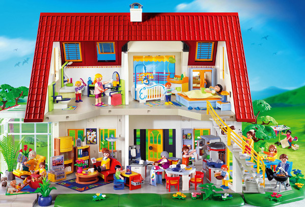
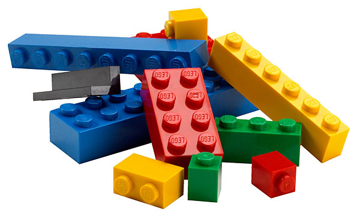

Drupal 8
Quoi de neuf ?
$ whois
Kevin Gautreau
- Développeur web freelance
- PHP / Spécialisé drupal
- Github / Twitter : @kgaut
- Site : https://kgaut.net
Drupal
- CMS / CMF PHP
- Développé par Dries Buytaert en 2001
- Open Source
Wordpress / Drupal


Les forces
- Extrêmement modulaire
- Grosse communauté
Les faiblesses
- Code archaique (avant D8)


Pour faire quoi ?
- des sites internet
- Applications métiers / Intranets / Extranets
- Architectures multi-sites
- Fournisseur de WS
- ...
Drupal 8 - Architecture
- Grosse réécriture
- Utilisation de briques SF2 (HttpFoundation, Routing, DependencyInjection, Yaml...)
- Twig (moteur de template)
- Composer pour gérer les dépendances
- Modules D7 dans le coeur
Drupal 8 - Pour l'utilisateur
- Amélioration de l'UI
- WYSIWYG
Utiliser Drupal 8 aujourd'hui ?
TL;DR : Non (pour un gros projet)
- Beaucoup de modules manquent
- Peu de ressources / docs
D'ici six moix → Beaucoup mieux
Questions
- Drupal : drupal.org
- Drupal Console : drupalconsole.com
- Prise en main : kgaut.net/d8-console
- Module "Mespronos": github.com/mespronos/mespronos